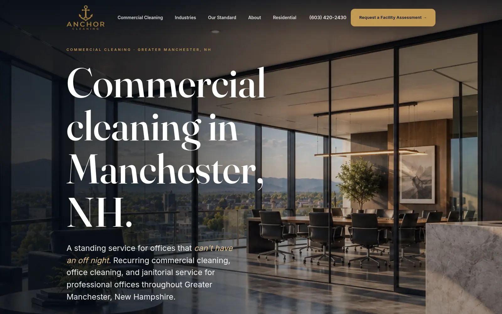

Anchor Cleaning

Context
Anchor Cleaning services professional offices — law firms, accounting practices, medical suites — across Greater Manchester. The site had to carry both paid and organic search traffic and convert one narrow audience: the person inside a small professional office who decides who cleans it.
Diagnosis
The constraint was not visual. It was routing and proof. A facility manager comparing vendors needs the service area, what a visit involves, and how to start — in that order. A quote form asking for square footage and frequency demands information the visitor does not have yet, so it collects nothing.
Two audiences were also competing for one page. Commercial contracts and residential home cleaning have different buyers, different language and different decisions, and a single page serving both serves neither.
Decision
Split the audiences: commercial at the root carrying one primary action, residential on its own page with its own vocabulary. Two pages, no blog, nothing to maintain that does not earn its maintenance. Static HTML with the stylesheet inlined, so the first paint does not wait on a second network round trip.
Experience
A photographic hero establishes the standard being sold — this buyer is purchasing consistency, and consistency has to look like something. Below it the page turns to warm paper, a brass rule system carrying the hierarchy, and one six-field form that confirms in place rather than redirecting to a thank-you page.
Local search structure is part of the build rather than a later addition: structured data for the service, an explicit service-area list, sitemap and robots.
Outcome
The site is instrumented. Session recording and form-submission events are live, and submissions write straight into the operator’s work queue rather than an inbox where they wait.
We are not publishing conversion figures yet. We publish outcome numbers when we have a full quarter of data and the client has approved the numbers — which is the same standard we hold other people’s case studies to.